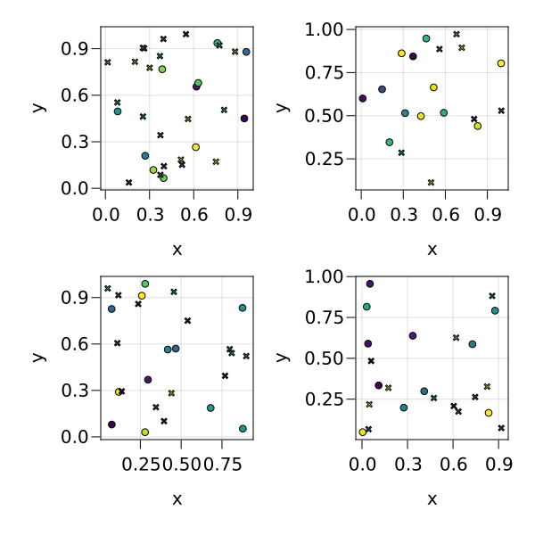
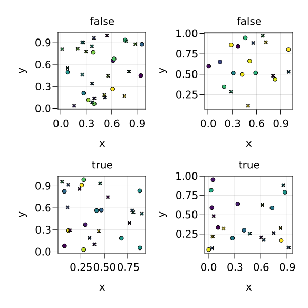
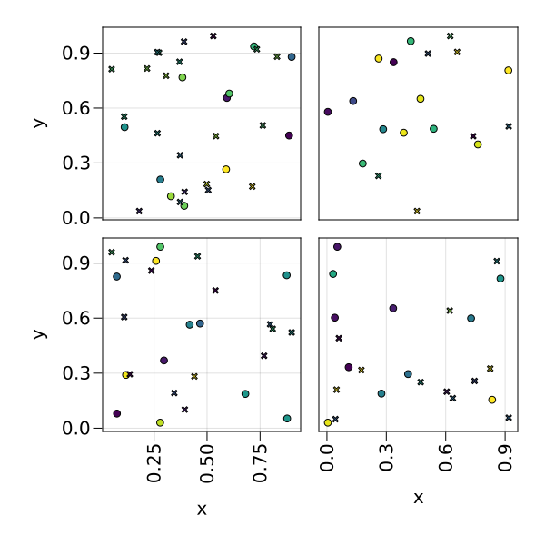

Tutorial
Example use of SplitApplyPlot. The function draw takes a dataset, a grouping and a mapping (a combined object with positional and keyword arguments).
using SplitApplyPlot, CairoMakie
df = (
x=rand(100),
y=rand(100),
z=rand(100),
c=rand(Bool, 100),
d=rand(Bool, 100),
e=rand(Bool, 100),
)
draw(
Scatter,
df,
(marker=:c, layout_x=:d, layout_y=:e),
mapping(:x, :y, color=:z),
resolution = (600, 600),
)
Axis information can also be passed in the grouping (this interface might change)
draw(
Scatter,
df,
(marker=:c, layout_x=:d, layout_y=:e, title=:e),
mapping(:x, :y, color=:z),
resolution = (600, 600),
)
A mutating approach is also possible for additional tweaking. The function draw! takes a mutating function as first argument. It returns the matrix of axes for further tweaking (it may return more things in the future).
fig = Figure(resolution = (600, 600))
mat = draw!(fig, df, (marker=:c, layout_x=:d, layout_y=:e), mapping(:x, :y, color=:z)) do ax, m
plot!(Scatter, ax, m)
ax.xticklabelrotation[] = π/2
end
hideinnerdecorations!(mat)
fig
This page was generated using Literate.jl.